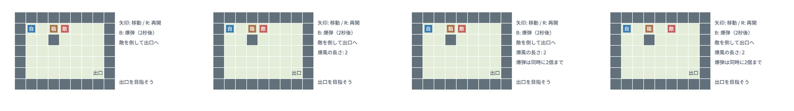
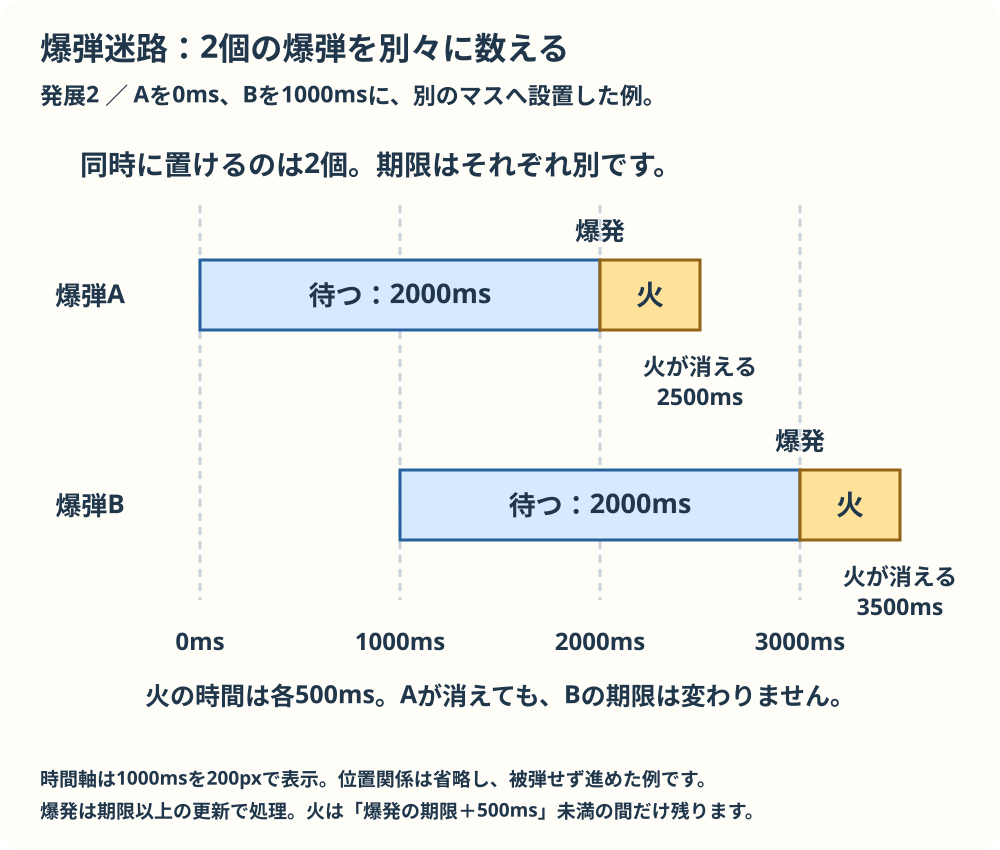

爆弾迷路アクションの発展
始める前に
基本編の完成版から始めます。ZIPを展開してできたフォルダーでindex.htmlを開きます。ZIPには基本編の3ファイルが入っています。
WindowsでZIPを展開する（動画）
各段階の変更を上から順に加え、保存したら index.html を開くか再読み込みします。
ステップ 1：爆風を長くする
このステップの見本を図で見る
2 + 1 × 1 = 3
右隣のマスへ届く
2 + 1 × 2 = 4; 2 <= 2
2マス先まで届く
ゲーム画面とコードの前後を見る

このステップの見本
for (const [dx, dy] of [[1,0],[-1,0],[0,1],[0,-1]]) for (let distance = 1; distance <= 1; distance++) {
変わったコードの一例（script.js）for (const [dx, dy] of [[1,0],[-1,0],[0,1],[0,-1]]) for (let distance = 1; distance <= 2; distance++) {
見本で確かめること
爆風が最大2マスまで届くことを確かめます。
目標
爆弾迷路を発展させます。
作業用フォルダーの script.js を開き、下の小作業を順に進めます。
爆風の長さを変える
次の範囲を置き換えます。
置き換える範囲
for (const [dx, dy] of [[1,0],[-1,0],[0,1],[0,-1]]) for (let distance = 1; distance <= 1; distance++) {置き換えるコード
for (const [dx, dy] of [[1,0],[-1,0],[0,1],[0,-1]]) for (let distance = 1; distance <= 2; distance++) {distance の上限を1から2に変え、爆風を最大2マスまで伸ばします。壁と箱では途中で止まります。
爆風の長さを表示する
次の目印の下に追加します。
目印
ctx.fillText("敵を倒して出口へ", 480, 180);追加するコード
ctx.fillText("爆風の長さ: 2", 480, 220);現在の長さを画面に表示します。
保存後の確認
保存してゲーム画面を更新する（動画）
index.html を再読み込みします。保存し、index.html を開くか再読み込みして、見本と比べます。
爆風が最大2マスまで届くことを確かめます。 この段階の見本を開く
小さな練習
距離や表示を変えて試します。 練習後はコードを元に戻してください。
ステップ 2：爆弾を2個まで置く
このステップの見本を図で見る
0 < 2 → 0 + 1 = 1
1個目を置ける
1 < 2 → 1 + 1 = 2
2個目を置ける
2 >= 2 → return
3個目は置けない
ゲーム画面とコードの前後を見る
このステップの見本
この行を足す前 変わったコードの一例（script.js）
ctx.fillText("爆弾は同時に2個まで", 480, 260);
見本で確かめること
違うマスに2個置き、2つの爆発を確かめます。
目標
爆弾迷路を発展させます。
作業用フォルダーの script.js を開き、下の小作業を順に進めます。
同時に置ける数を変える
次の範囲を置き換えます。
置き換える範囲
if (this.state !== "playing" || this.bombs.length >= 1 || this.bombs.some(b => b.x === this.player.x && b.y === this.player.y)) return;置き換えるコード
if (this.state !== "playing" || this.bombs.length >= 2 || this.bombs.some(b => b.x === this.player.x && b.y === this.player.y)) return;爆弾が2個以上あるときに新しく置く処理を止めます。同じマスに重ねることもできません。各爆弾の期限は、それぞれ置いた時刻の2秒後です。

2個の爆弾は、それぞれ置いた時刻から2秒後に爆発します。Aを置いて1秒後にBを置くと、爆発も1秒ずれます。火が残る500msも、爆弾ごとに数えます。
A due2000/until2500、B due3000/until3500。火はnow<until、期限到達順で爆発処理。
上限を画面に示す
次の目印の下に追加します。
目印
ctx.fillText("爆風の長さ: 2", 480, 220);追加するコード
ctx.fillText("爆弾は同時に2個まで", 480, 260);爆弾を同時に2個まで置けることを表示します。
保存後の確認
保存し、index.html を開くか再読み込みして、見本と比べます。
違うマスに2個置き、2つの爆発を確かめます。 この段階の見本を開く
小さな練習
距離や表示を変えて試します。 練習後はコードを元に戻してください。
ステップ 3：敵を巡回させる
このステップの見本を図で見る
このステップの見本
この行を足す前 変わったコードの一例（script.js）
if (next < 4 || next > 5) this.enemy.direction *= -1;
見本で確かめること
敵が2つのマスを往復し、爆風で倒せます。
目標
爆弾迷路を発展させます。
作業用フォルダーの script.js を開き、下の小作業を順に進めます。
巡回の条件を作る
次の目印の下に追加します。
目印
if (this.flames.some(f => f.x === this.player.x && f.y === this.player.y)) { this.state = "over"; this.message = "爆風に当たった"; }追加するコード
if (this.state === "playing" && this.enemy.alive && now >= this.enemy.nextMove) {
}プレイ中で敵が生きており、次の移動時刻に達したときだけ動かします。
移動先と方向を決める
次の目印の下に追加します。
目印
if (this.state === "playing" && this.enemy.alive && now >= this.enemy.nextMove) {追加するコード
const next = this.enemy.x + this.enemy.direction;
if (next < 4 || next > 5) this.enemy.direction *= -1;次の横位置が4から5の範囲を出るなら、方向を反転します。
位置と次の時刻を更新する
次の目印の下に追加します。
目印
if (next < 4 || next > 5) this.enemy.direction *= -1;追加するコード
this.enemy.x += this.enemy.direction; this.enemy.nextMove = now + 500;1マス動かし、次の移動時刻を500ミリ秒後にします。
移動先の接触を調べる
次の目印の下に追加します。
目印
this.enemy.x += this.enemy.direction; this.enemy.nextMove = now + 500;追加するコード
if (this.enemy.x === this.player.x && this.enemy.y === this.player.y) { this.state = "over"; this.message = "敵に当たった"; }
if (this.flames.some(f => f.x === this.enemy.x && f.y === this.enemy.y)) this.enemy.alive = false;敵がプレイヤーに触れたら失敗、爆風に触れたら敵を倒します。
保存後の確認
保存し、index.html を開くか再読み込みして、見本と比べます。
敵が2つのマスを往復し、爆風で倒せます。 この段階の見本を開く
小さな練習
距離や表示を変えて試します。 練習後はコードを元に戻してください。